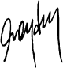

SÜRDÜRÜLEBİLİRLİK RAPORU 2014
Genel Müdür’ün Mesajı

Anadolu’nun köy ve kasabalarında tarımla geçimini sağlayan ve hepimiz için değer üreten çiftçilerimizden, ihracat yaparak ekonomiye katkıda bulunan kurumsal müşterilerimize, ekonomimizin bel kemiği KOBİ’lerden öğrenci, emekli ve her meslekten çalışanlara kadar geniş ve çeşitlilik gösteren bir müşteri kitlesine sahibiz. Bu geniş kitleye, Ziraat Finans Grubu’nu oluşturan iştiraklerimizle birlikte sunduğumuz ürün, hizmet ve çözümlerimiz bugünü olduğu kadar ülkemizin yarınını da şekillendirmekte, aldığımız stratejik kararlar ve aksiyonlarımız, ekonomik istikrara olduğu kadar piyasaların etkin işleyişine de katkıda bulunmaktadır.
Sürdürülebilirlik çalışmalarımız kapsamında gerçekleştirdiğimiz temel yeniliklerden biri, Ziraat Bankası’nın bugün olduğu kadar gelecekteki başarısını da etkileyeceğini öngördüğümüz öncelikleri, iç ve dış paydaş kitlemizin görüşlerini dikkate alan, kapsamlı bir çalışma sonucunda belirlemiş olmamızdır.
Raporumuzun ilgili bölümlerinde ayrıntılı olarak sunulan önceliklendirme çalışması bulgularına göre, Ziraat Bankası’nın performansı açısından kilit önem taşıyan konuların başında piyasa ve müşteri odaklılık yer almaktadır. Paydaşlarımızın ortak kanaati olarak ortaya çıkan bu sonuç, Ziraat Bankası’nın son 3 yıllık dönemde yürüttüğü stratejik değişim programının temel hedefi ile de örtüşmektedir. Zira bugünkü rekabet koşullarında bir finansal hizmet sağlayıcısının sürdürülebilir geleceği ve güçlü performansı, ancak ve ancak her şeyin odağında müşteriyi gören ve sunulan değer önerisini maksimum kılmayı hedefleyen bir strateji ile mümkündür.
Önceliklendirme çalışmamızın sonucunda, piyasa ve müşteri odaklılığın yanı sıra bankacılık ürün ve hizmet yelpazemizin zenginliği, coğrafi yaygınlığımız ve yüksek müşteri erişimimiz ile çeşitlendirilmiş mevduat yapımız da Ziraat Bankası’nın öncelikli konuları arasında yerini almıştır. Diğer taraftan, Ziraat Bankası’nın kuruluş misyonu gereği ön plana çıkan tarım sektörünün desteklenmesi, ülke ekonomisi açısından önem taşıyan KOBİ ve girişimcilere sunulan hizmetler, müşteri verilerinin korunması, sürdürülebilirlik yönetimini de kapsayacak şekilde kurumsal yönetim ve risk yönetimi de paydaşlarımızca Ziraat Bankası’nın bugün olduğu kadar gelecekteki performansı açısından öncelikli konular olarak işaret edilmiştir.
Çalışma sonucunda ortaya çıkan bu öncelikler sadece Bankamız için değil, aynı zamanda Ziraat Finans Grubu’nun bütün üyeleri açısından da önemlidir. Bu bulgular, gelecek dönemde yol haritamızı ve stratejilerimizi piyasa gerçekleri ışığında şekillendirme sürecinde bize kılavuzluk edecek, katma değer üretme gücümüzü daha da pekiştirmemizde önemli rol oynayacaktır.
Ziraat Bankası, bu yıl da sürdürülebilirlik anlayışını bankacılığın bütün katmanlarına entegre etmeye yönelik çalışmalarını yoğunlaştırmıştır. Bu doğrultuda gerçekleştirilen çalışmalar neticesinde; bankacılık ürün ve hizmetlerini daha da geliştirmiş, piyasaya yenilikçi ürünler sunmuş, hizmet süreçlerini yalın ve verimli hale getirmiş ve en önemlisi de müşteri ihtiyaçlarına yanıt veren çözümler üretmiş bulunuyoruz. Organizasyon yapımızı güncel ihtiyaçlara göre geliştirmeye ve hizmet ağımızı büyütmeye devam ederken, her segmentten müşterilerimize yaşattığımız hizmet deneyimini geliştirmek ana odağımız olmuştur.
Bankacılık piyasasında bireyler ve şirketler, erişimi kolay, anlaşılır, kıyaslanabilir ve tüketici dostu ürünler talep etmektedirler. Bu nedenle Ziraat Bankası da hizmet sunduğu her alanda ve tüm müşteri segmentlerinde bu talebe yönelik çalışmalar yürütmektedir.
Diğer taraftan, yakın geçmişte devreye aldığımız ve geliştirme çalışmalarını sürdürdüğümüz yeni internet bankacılığı modüllerimiz, yüksek müşteri beğenisi ve memnuniyeti ile karşılanmıştır. Teknolojinin mümkün olan her noktada iş süreçlerimize entegrasyonu ile dijitalleştirdiğimiz her ürün, hizmet ve süreç; kaynak verimliliği, çevreye katkı ve verimde artış anlamında bize çok önemli kazanımlar sağlamaktadır. Bu yaklaşımla, işgücü başta olmak üzere tüm kaynaklarımızı doğru ve verimli işlerde kullanma imkanı kazanırken, önemli mali tasarruflar da elde etmekteyiz.
2014 yılında engelli müşterilerimize daha iyi ve konforlu bir bankacılık deneyimi yaşatmayı hedefleyen, toplumsal kazanımlar anlamında da son derece önemli olduğuna inandığımız “Engelsiz Bankacılık” projemizi devreye almış bulunuyoruz. Hizmet mekanlarımızda hissedilebilir yüzey uygulamaları, çağrı butonları, Braille Alfabesi baskılı bilgilendirme panoları, özel tasarlanan ATM’ler ve görme engellilere uygun olarak hazırlanmış kurumsal internet sitemizle müşterilerimize engelsiz bankacılık sunmaya yönelik adımlarımızı yoğunlaştırmış bulunuyoruz.
2014 yılında karbon ayak izimiz de dahil olmak üzere, ekolojik ayak izimizi en doğru ve en etkin bir biçimde yönetmek adına değerli projeler tamamlanmış ve önemli tasarruflar sağlanmıştır. Bir bankanın tükettiği en önemli doğal kaynaklardan biri kağıttır. Son yıllarda gerçekleştirdiğimiz dijitalleştirme projelerimiz, son derece değerli kazanımlar sağlamış ve kağıt tüketimimizde önemli tasarruflar elde etmemizi mümkün kılmıştır. Benzer şekilde, hayata geçirdiğimiz iyileştirmelerin bir sonucu olarak, özellikle Genel Müdürlük hizmet binalarımızda su, elektrik ve doğal gaz tüketimlerimizde kayda değer iyileşmeler elde etmiş bulunuyoruz.
Özetlediğimiz tüm bu çalışmalarımızı, sürdürülebilirlik hedeflerimiz kapsamında önemli kazanımlar olarak görüyor ve 2014 yılını, Ziraat Bankası’nı müşteri odaklı bir bankaya dönüştürme yolunda emin adımlarla ilerlediğimiz bir yıl olarak değerlendiriyoruz.
Memnuniyetle ifade etmek isterim ki, raporumuzu hazırladığımız 2015 yılı boyunca kaydettiğimiz kazanımlar; “Türkiye’nin en eski yeni bankası” olma iddiamızı kararlılıkla hayata geçirmekte olduğumuzu ortaya koymuştur. Özellikle müşteri ve piyasa odaklılık boyutunda elde ettiğimiz sonuçlar, hedeflerimizle örtüşen sağlıklı bir ilerleme kaydetmekte olduğumuzu ve temel paydaş gruplarımızdan olan müşterilerimizin Ziraat markasını artan oranda tercih ettiklerini göstermektedir.
Değişimin bitmeyen bir yolculuk olduğu anlayışıyla kendini sürekli yenileme ve günümüzün sıkı rekabet koşullarına ayak uydurma bilinciyle hareket eden Ziraat Bankası, 2014 yılında paydaşlarıyla birlikte ilerlemesini sürdürmüştür.
2012 yılında başlatılan Ziraat Bankası’nın dönüşüm yolculuğu, 2014 yılında “Hep Birlikte Daha İleri” sloganında özetlenen yeni bir aşamaya ulaşmıştır. Bu yolculukta hayata geçirilen altyapısal değişim ve kurumsal gelişim projelerinin uygulamaya alınması yönündeki çalışmalar gelecekte de devam edecektir.
Değişim ve dönüşüm projesi ile hedeflenen, Ziraat Finans Grubu’nu; Kurumsal Bankacılık, Şube Bankacılığı ve Uluslararası Bankacılık temelinde geleceğe taşımak ve küresel dönüşüm projelerini tamamlamaktır. Proje kapsamında Banka’nın sürdürülebilirlik öncelikleri; müşteri ilişkileri yönetimi, kurumsallaşmış iş süreçleri, operasyonel mükemmeliyet, objektif ve şeffaf insan kaynakları yönetimi, etkin bilgi teknolojileri ve güçlü bilanço olarak kurgulanmıştır. Bu çerçevede, Banka’nın stratejik hedeflerine ulaşması için oluşturulan ve Stratejik Yönlendirme Komitesi tarafından takip edilen Yıllık Stratejik Yol Haritası doğrultusunda çalışılmış ve kalıcı değer üretilmiştir.
Global ölçekte kabul görmüş sürdürülebilirlik prensiplerinin iş süreçlerimize entegrasyonu çerçevesinde, kredi süreçlerine, çevresel ve sosyal risklerin yönetilmesine yönelik kriterlerin eklenmesine ve yeni projelerle yapısal gelişime farklı boyutlar kazandırılmasına devam edeceğiz.
Geride bıraktığı 152 yılda olduğu gibi yarın da sektörünün lideri ve trend belirleyici bir aktörü olmayı hedefleyen Ziraat Bankası, yaygın hizmet ağı, profesyonel yönetim ekibi, güçlü kurumsal yönetim yapılanması, derinlemesine piyasa bilgisi, eşsiz bilgi birikimi ve her şeyden önemlisi güçlü markası ile geleceği şekillendirmek üzere çalışmaya devam etmektedir.
Gerek bankacılık sektörü gerekse Ziraat Finans Grubu’nu oluşturan iştiraklerimizin faaliyet gösterdiği diğer finansal hizmet alanları hızla değişen ve şekillenen dünya ve ülke ekonomisi ile etkileşim içindedir.
Yaşadığımız hızlı gelişmeler, yeni bir küresel ekonomik dengenin doğmakta olduğunu açıkça işaret etmektedir. Bu durum, ülkemizi ve iş kollarımızı etkilemeyi sürdürecektir. Diğer taraftan, küresel sürdürülebilirlik ajandasının en önemli konuları arasında yer alan doğal kaynaklardaki azalışı ve verimsiz kullanımlarını, iklim değişikliğini ve küresel ısınmayı, gerek Ziraat Bankası için gerekse en geniş anlamdaki paydaş kitlemiz için birer risk ve aynı zamanda birer fırsat olarak görüyoruz.
Tanımladığımız riskleri ve iş fırsatlarını paydaşlarımızla işbirliği içinde doğru yönetmeye, değerlendirmeye ve performansımızı ivmelemeye her zamankinden daha fazla hazırız. 2015 ve sonrasını potansiyelimizin performansımıza yansıyacağı kilit önemde bir dönem olarak görüyoruz. Sürdürülebilirlik önceliklerimiz doğrultusundaki çalışmalarımızı çok yönlü olarak sürdürmeye, Ziraat Finans Grubu çapında büyüyen sinerjiler üretmeye devam edeceğiz. Bu suretle, Türkiye için olduğu kadar paydaşlarımız için de daha çok değer üretiyor ve paylaşıyor olacağız.
Her zaman olduğu gibi performansımızı üreten çalışanlarımıza, tercihlerini bizden yana kullanan müşterilerimize ve diğer paydaşlarımıza, Yönetim Kurulumuz ve şahsım adına teşekkür etmek istiyorum.
Saygılarımla,
